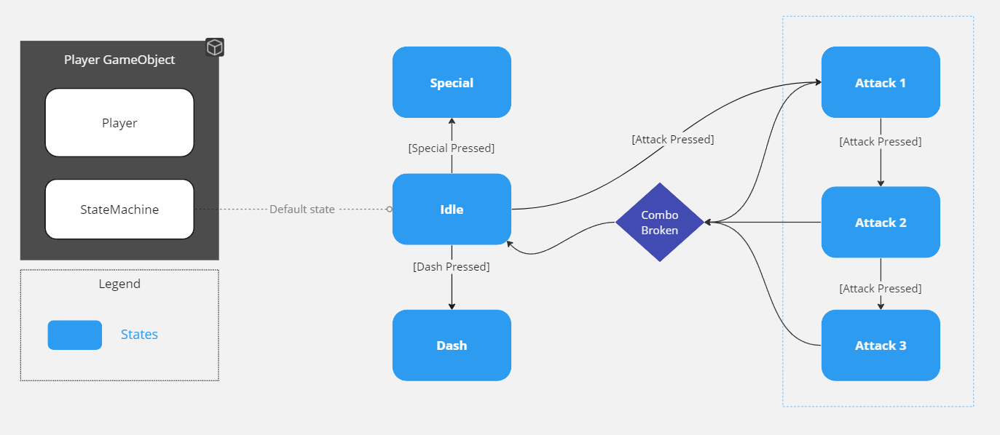

Hades FSM Character Controller
Using the stygian blade combat system from Hades as a reference, I created a scriptable object based Finite State Machine to drive the character controller. The controller features a three-hit combo, a dash, and a special.
Each state controls various behaviours through the player controller such as attacking, invoking events, and triggering animations.
When I started working on this, I was mostly interested in creating a simple combat system with chainable combos. This led me to developing the state machine that can be reused and expanded upon in future projects. Some gameplay captures can be observed below:
I would be interested in developing the combat system further in the future. In particular, adding a few simple enemies based on the Asphodel enemies in Hades and a small arena to duel them.
Tools and Technologies:
- Unity 2022.2.15f1
- C#
The source code and Unity project can be found on GitHub.